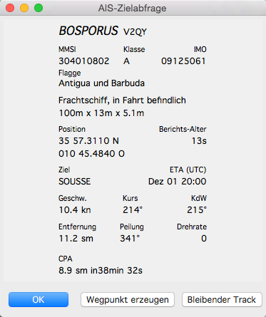
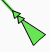

AIS
Zur allgemeinen Einführung in AIS ist Wikipedia ein guter Start.
OpenCPN kann folgende Transponder-Typen erkennen:
Class A
Class B
ATON, Aid To Navigation (Navigationshilfen)
BASE, Basis-Stationen
GPSG_BUDDY, GpsGate Buddy Ziele
DSC, Digital Selective Calling Ziele
SART, Search And Rescue Transponder Ziele
ARPA, Automatic Radar Plotting Aid Ziele
APRS, Automatic Packet Reporting System Ziele
Das Bildschirmfoto unten gibt ein erstes Gefühl, wie AIS Ziele in OpenCPN dargestellt und verwendet werden.

Hier ist der Kurs-Voraus Modus aktiviert und unser eigenes Schifft läuft mit Kurs 352 Grad und 13 Knoten, eine aktivierte Tracklinie hinterher ziehend und eine durchbrochene Linie voraus mit dem Kurs. Diese endet mit einem Punkt, der den Ort nach 6 Minuten Fahrt oder 1,3 Seemeilen voraus darstellt. Wir treffen ein Schiff, das in die Gegenrichtung dampft und der Verkehrstrennung folgt. Dieses Ziel hat ebenfalls eine Linie und einen Punkt voraus, der seinen Kurs und seinen Ort in 6 Minuten (konfigurierbar) darstellt. Die zwei blauen Punkte - verbunden mit einer rot/gelben Linie - bezeichnen sogenannte CPA (Closest Point of Approach, naheste Annäherungspunkte) der Schiffe bei aktuellem Kurs und Geschwindigkeit. Das betreffende andere Schiff ist in rot, da es eine potentielle Gefahr für uns darstellt. Ein AIS Warnfenster erscheint.
Es sind viele Informationen über Schiffe, die AIS Signale aussenden und auf der Karte angezeigt werden, verfügbar.
Der Cursor ist über dem getroffenen Schiff auf einem SüdWest Kurs. Da es noch keine vollständigen Informationen gibt - das kann etwas dauern -, haben wir noch keinen Namen sondern nur eine ID Nummer, die sogenannte MMSI Nummer. Was genau im gelben Popup Fenster gezeigt wird, wird unter der AIS Lasche in den Einstellungen bestimmt.
Dieses Schiff wird mit seinem Namen identifiziert und ist in grün, da es keine Gefahr für unsere Navigation darstellt.

Wenn wir statt den Mauszeiger auf das Objekt zu bewegen, einen Rechts-Klick auf das Objekt machen, zeigt der Kontext-Menüpunkt AIS-Zielabfrage das obige Fenster. Es werden allerhand relevante Informationen angezeigt. TCPA ist die Zeit bis CPA, wie lange wir vom nahesten Punkt zum anderen Schiff entfernt sind. Mit "OK" wird dies Fenster geschlossen, "Wegpunkt erzeugen" erzeugt einen Wegpunkt an der aktuellen Position des AIS-Ziels und "Bleibender Track" speichert den Track des AIS-Ziels ab. Dieser Track erscheint dann im Routen-Manager.
Weiterhin enthält dieses Kontextmenü noch die Einträge "Zeige Ziel CPA" und "Liste AIS-Ziele...", womit zum Einen die gestrichelte CPA-Linie erzeugt wird und zum Anderen die AIS-Liste erscheint (siehe Bilder unten).
Alle Alarmglocken schrillen! Ein neues Ziel erscheint hinter einer Insel auf unserem Bug, OpenCPN macht einen Alarm und zeichnet einen gezackten Kreis um das neue Ziel. Es erscheint eine AIS Alarm Box mit allen Informationen über das neue Ziel. Wir können den Alarmton abschalten, aber müssen bestätigen, bevor die Box verschwindet.

Ein anderer Weg zur Darstellung der AIS Information. Die AIS Zielliste ist mit dem Rechts-Klick Menü erreichbar. Nach meinen Erfahrungen konnte ich bisher die AIS-Klassen "A", "B"
(für nicht ausrüstungspflichtige Schiffe), "Basisstation" (an Land) und sog. "AtoN" (Aids-to Navigation, Navigationshilfen, Leuchtfeuer) identifizieren. Die Liste ist
nach Entfernung zu den Zielen sortiert.
Ziel Info Button: Klick auf ein Ziel zur Markierung und dann Klick auf den Button zur Anzeige des Informationsdialogs.
Ziel Ansicht Button: Markiere ein Ziel und Klick diesen Button zur Zentrierung des Bildschirms auf dieses Ziel.
Radius einschr. (sm): Die Liste zeigt nur noch Ziele mit diesem oder kleinerem Bereichswert.
Anzahl Ziele: Anzahl der empfangenen Ziele.
Aktive Search And Rescue Targets (SART Ziele) und Digital Selective Calling (DSC Notrufziele) stehen immer oben auf der Liste, auch bei Sortierung. Ich habe derartige Ziele bisher nicht gehabt.
AIS Ziele mit Breiten größer als +/-85 Grad zeigen als Peilung "unavailable" (unerreichbar), da OpenCPN nicht für Polarnavigation ausgelegt ist.
Die Lasche AIS in den Einstellungen

Mit dieser Lasche wird das Verhalten vieler Dinge der AIS Anzeige kontrolliert. Es gibt keine "bevorzugten" Einstellungen. Alles hängt davon ab, wo Sie sind, in welcher Navigationsart Sie sind und was für ein Schiff Sie haben. Es liegt in Ihrer Verantwortung, hier das Richtige zu finden.
Die AIS Daten-Schnittstelle wird unter "Verbindungen" eingestellt. Siehe hier.
CPA Berechnung
Regeln, wie und wann der naheste Annäherungspunkt (Closest Point of Approach - CPA) (wenn zwei Schiffe sich am nächsten sind)
berechnet wird. Es gibt 3 selbsterklärende Checkboxen, wo der Anwender bei Aktivierung seine Werte festlegen kann.
- Keine (T)CPA-Berechnung, wenn Ziel weiter entfernt als (sm) Ist das Schiff weit entfernt, dann ist die Berechnung des (T)CPA weniger interessant.
In einem verkehrsreichen Gebiet kann ein vernünftiger Wert ein Durcheinander vermeiden und Prozessorleistung sparen.
- Warnung, wenn CPA geringer ist als (sm) Ähnliche Argumente wie oben. Kontrolliert, wann eine Warnung bei kleinster CPA Distanz erfolgt.
- ...und TCPA geringer ist als (Minuten) Ähnlich wie oben wird der Alarm bei kleinster Zeit zum CPA kontrolliert.
Verlorene Ziele
Regeln, wie verlorene Ziele in der Anzeige behandelt werden sollen.
Ein Ziel gilt als verloren, wenn die normale Übertragung nicht mehr erfolgt zur Erneuerung des Schiffs-Status.
- Ziele als verloren markieren nach (Minuten) Ziel wird als verloren betrachtet, wenn innerhalb der hier gesetzten Minuten keine Übertragung erfolgt.
Das Ziel ändert sich auf der Anzeige und erhält einen schwarzen Balken.
- Verlorene Ziele entfernen nach (Minuten) Das verlorene Ziel wird nach der hier gesetzten Anzahl von Minuten aus der Anzeige entfernt.
Anzeige
Wenn und wie Kurs und Geschwindigkeit eines Schiffes auf der Anzeige erscheinen sollen und stationäre Schiffe erscheinen sollen.
- Zeige KüG-Pfeil für Ziel, Länge (Minuten) Ein Pfeil vor dem Schiff repräsentiert seinen COG (Course Over Ground - Kurs über Grund).
Die Länge dieses Pfeils und der Punkt am Ende repräsentieren die berechnete Position in der hier gesetzten Anzahl von Minuten. Verwenden Sie leicht zu berechnende Werte.
Wenn sich ein Schiff Ihnen mit 15 Knoten nähert und die Zeit auf 6 Minuten gesetzt ist, dann ist der Punkt 1,5 Seemeilen vor dem Schiff.
- Zeige Tracks für Ziele, Länge (Minuten) Ein Track hinter einem Ziel hilft bei der Beurteilung des Vorhabens des Ziels.
- Ziele vor Anker/Mooring unterdrücken, max. Geschw. (kn) Ein ankerndes oder an Bojen festgemachtes Ziel
wird nicht angezeigt, wenn seine Geschwindigkeit geringer ist, als hier festgelegt. Der "Navigations-Status" wird vom Schiff festgelegt und muß nicht stimmen.
- Erlaube die Dämpfung der Anzeige weniger kritischer Ziele wenn mehr als ... Ziele Macht genau das.
- Zeige Gebietsmeldungen (von AIS Binär-Nachrichten), siehe unter AIS Gebietsnachrichten.
- Zeige reale Größe AIS-Ziele Zeigt bei entsprechendem Kartenmaßstab die reale Größe eines AIS Ziels.
- Anzeige von AIS Echtzeit Vorhersage Ein weiteres graues Symbol zeigt eine berechnete Position des AIS Ziels auf dem Kursstrahl.
- Zeige Namen von AIS Zielen bei Maßstab größer 1: zu xyz Dann Anzeige des Namens wie im Bild oben.
- Behandle WPL Sequenzen wie APRS Positionsbericht Macht genau das.
Kurzübersicht
Markieren Sie die jeweiligen Einstellungen (Haken setzen) bei den Informationen,
die Sie sehen möchten, wenn der Cursor auf der Karte über ein Ziel geht.
CPA-/TCPA-Alarme
Wird ein Alarm ausgelöst, dann wird ein gezackter Kreis um das Ziel gezeichnet, das den Alarm ausgelöst hat.
Hier können weitere Ereignisse eingestellt werden, die dem Alarm mehr Bedeutung zumessen. Stellen Sie für die praktische Navigation sicher, daß
ein Alarm-Klang gesetzt ist.
- CPA-/TCPA-Alarmfenster anzeigen Zeigt einen Alarm Dialog mit Ziel Informationen, wenn ein Alarm ausgelöst wird.
- Warnton bei CPA-/TCPA-Alarmen und DSC/SART-Alarmen abspielen Spielt den Ton ab, wenn ein Alarm ausgelöst wird.
- Alarm für festgemachte/vor Anker liegende Ziele unterdrücken Zeigt keine Alarme für ankernde oder an Bojen festgemachte Ziele.
- Warnton auswählen Wählt einen passenden Alarmton für Sie. Dieser Alarmton wird auch für die Ankerwache benutzt. Der Anwender kann seine eigene Tondatei ("*.wav Datei) verwenden. Speicherort ist dann bei Mac OS X der Packetinhalt "Contents/SharedSupport/sounds/". Dazu muß der OpenCPN App geöffnet werden.
- Warnton Testen Testet den gewählten Ton und stellt sicher, daß diese wichtige Funktion arbeitet.
- Aktiviere max. Zeitdauer für Alarm-Quittierung. Steht ein Zielalarm an, wird die gesetzte Anzahl Minuten gewartet, bis der Alarm noch mal kommt. Damit werden Alarm-Wiederholungen vermieden, wenn durch eigene Schiffsbewegungen in kabbeligem Wasser die Alarmgrenze zu oft getriggert wird.
Wann genau wird ein Alarm aktiviert?
Ein Alarm liegt an, wenn sich Ihr Boot dem CPA nähert, der blaue Punkt in der Erweiterung der Kurslinie, und die hier vorher angeführten Konditionen zutreffen. Erhöht sich die Distanz zum CPA, wenn sich die betreffenden Schiffe passiert haben, stoppt der Alarm, selbst wenn die anderen Bedingungen noch zutreffen.
+++
Schnell-Referenz für Ziele:
AIS Ziele mit nicht verfügbaren Positionsdaten sind grau dargestellt.
Ein aktiver AIS SART und Notruf entsprechend einem "Mayday", siehe unter AIS SART | |
| Angezeigtes Symbol beim Testen eines AIS-SART Gerätes |
Potentielle Gefahr | |
Keine Gefahr. Nicht identifiziert (kein Name empfangen) | |
Keine Gefahr. Identifiziert | |
Verlorenes Ziel | |
Schiff mit verlorener Position, angezeigt bei letzter bekannter Position | |
Schiff nicht unter Kommando | |
Schiff manövrierunfähig | |
| Schiff durch seinen Tiefgang behindert |
Schiff aufgelaufen | |
Schiff fischend | |
 | Sehr schnelles Schiff, Hovercraft oder Tragflügel-Boot |
Am Anker oder an Bojen. Angezeigt, wenn der "Navigations-Status" als "Am Anker" übertragen wird. Es gibt keine Garantie für die Richtigkeit des Status, da er manuell vom übertragenen Schiff gesetzt wird... | |
... gezeigt an diesem Schiff. Es bedeutet, daß das Schiff nach backbord (links) dreht, auch zu sehen durch das Display Update. ROT (Rate Of Turn) ist im AIS Query Dialog mit Rechts-Klick Menü verfügbar. | |
Das V-artige Heck bedeutet ein Klasse B Ziel. Schlepper und Lotsenboote haben oft Klasse B Transponder. Sie sind meist vorgesehen speziell für kleine kommerzielle Boote, Fischerboote und Vergnügungs-Fahrzeuge. | |
Das ist ein Symbol für den europäischen Binnengewässer AIS Standard "Blue Paddle", der bedeutet, daß das Schiff eine "Steuerbord-Steuerbord" Passage wünscht. Das blaue Signal kann vom Ziel manuell an- und abgeschaltet werden. | |
ein Stern mit innerem Pluszeichen für Navigationshilfen (AtoN = Aid to Navigation) z.B. ein Leuchtturm oder eine Boje mit AIS Transmitter | |
| Navigationshilfe außerhalb seiner richtigen Position (abgedriftet) |
Virtuelle Navigationshilfe, kein richtiges Seezeichen |


AtoN Zeichen können folgende Besonderheiten haben:
- Rhombus gestrichelt gezeichnet = virtuelle AtoN
- Rhombus durchgezeichnet = reale AtoN
- sowie folgende Zusatzsymbole:
|
|
|
|
|
|
|
|
|
eine AIS Basis-Station. |
Folgende Ziele werden nur angezeigt, wenn DSC und GpsGate Nachrichten in den ankommenden AIS Datenstrom z.B. mit einem Multiplexer eingespeist wurden.
| DSC Station |
Notsignal sendende DSC Station, zu behandeln wie "Mayday" | |
| GpsGate Buddy Ziel |

Empfang von AIS-Signalen
Die Class A Signale der Berufsschifffahrt werden als statische und dynamische Daten gesendet. Dynamische Daten werden je nach Schiffsgeschwindigkeit öfter gesendet als die
statischen Daten, die z.B. Schiffsname, Größe, Zielhafen, ETA umfassen und nur alle 6 Minuten gesendet werden. Bei Class A können dynamische Daten alle 6 oder 10 Sekunden
oder sogar öfter bei Kursänderungen gesendet werden. Bei Class B sind es abhängig von der Geschwindigkeit 3 Minuten (unter 2 Knoten), 30 Sekunden (2-14 Knoten) oder
15 Sekunden (14-23 Knoten).
Die Reichweite ist stark abhängig von der Antennen-Anlage (Höhe, Störungen durch Splitter etc.). In einigen Gebieten werden auch stratosphärische Spiegelungen beobachtet,
die zu Überreichweiten führen können. Feste Basis-Stationen könen gegebenenfalls AtoN Signale spiegeln.